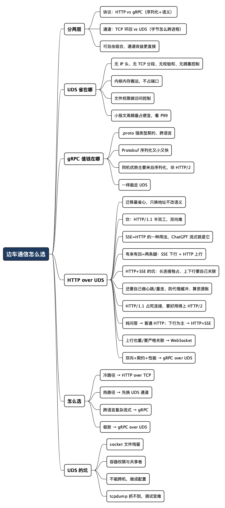

边车和服务之间怎么说话最快：HTTP、gRPC、UDS 的一场同机较量
Posted on 日 02 8月 2026 in Tech
| Abstract | 边车和服务之间怎么说话最快：HTTP、gRPC、UDS 的一场同机较量 |
|---|---|
| Authors | Walter Fan |
| Category | Tech |
| Version | v1.0 |
| Updated | 2026-08-02 |
| License | CC-BY-NC-ND 4.0 |
边车和服务之间怎么说话最快：HTTP、gRPC、UDS 的一场同机较量
先说个画面。一个 Kubernetes Pod 里挤着两个容器：一个是你的业务服务，另一个是边车（sidecar）——可能是 Envoy 代理，可能是日志收集器，也可能是个鉴权/加密的旁挂进程。它俩共享网络命名空间，物理上就贴在一起，中间只隔着一层操作系统内核。
可就是这么近的两个邻居，绝大多数时候还在用 http://127.0.0.1:8080 这种方式说话——把请求打包成 HTTP 报文，塞进 TCP 协议栈，走一遍三次握手、拥塞控制、Nagle 算法……然后在同一台机器上兜一圈再回来。这就好比你要跟隔壁工位的同事说句话，非得先写封邮件、经过公司邮件服务器转发一圈。能通，但绕。
这篇文章想把"边车和服务之间到底怎么通信最高效、最便捷"这件事讲清楚。我会对比三条主流路子：HTTP over TCP、gRPC、以及走 Unix Domain Socket（UDS）（TCP-over-UDS 或 HTTP-over-UDS）。急的读者先记这一句：
同机通信，"协议选型"和"传输通道选型"是两件事。协议决定序列化和语义（HTTP 还是 gRPC），通道决定数据怎么跨进程（TCP 环回还是 UDS）。真正的性能杠杆，往往在通道那一侧。
- 不是什么：这不是"gRPC 一定比 HTTP 快"的口水战。同机场景下，很多性能差异来自传输层，不是应用层协议本身。
- 是什么：这是一次"同一台机器上，两个进程怎么把字节搬得又快又省心"的工程权衡。
术语先垫两句。边车（Sidecar）：和主服务部署在一起、分担某类横切职责（代理、鉴权、日志、加密）的辅助进程，典型如 Service Mesh 里的 Envoy。UDS（Unix Domain Socket）：一种只在同一台机器内部用的进程间通信（IPC）通道，用文件路径当地址（比如
/tmp/app.sock），不走网卡、不走 IP 协议栈。下面会反复用到。
一、先分清两层：协议 vs 通道
聊性能之前，得先把两个常被混为一谈的东西拆开，否则永远是鸡同鸭讲。
第一层是应用协议——你的两个进程"用什么语言、什么格式"交换信息：
- HTTP/1.1 + JSON：最通用。人能读、工具遍地、调试方便。代价是 JSON 序列化慢、报文冗长（字段名重复出现）。
- gRPC（HTTP/2 + Protobuf）：二进制序列化紧凑，天生支持多路复用和流式，跨语言有强类型契约（
.proto文件）。代价是不能拿浏览器直接看，得有工具链。
第二层是传输通道——字节到底"从哪条路"跨过进程边界：
- TCP 环回（loopback，即 127.0.0.1）：数据在本机 TCP/IP 协议栈里走一遭。虽然不出网卡，但该有的 TCP 状态机、校验、缓冲区管理一样不少。
- UDS（Unix Domain Socket）：内核直接在两个进程间搬数据，跳过整个 IP 协议栈——没有 IP 头、没有 TCP 三次握手（连接建立是本地的）、没有拥塞控制、没有校验和计算。
关键在于：这两层可以自由组合。 HTTP 可以走 TCP，也可以走 UDS；gRPC 默认走 TCP，同样可以配成走 UDS。
| 组合 | 应用协议 | 传输通道 | 常见场景 |
|---|---|---|---|
| HTTP over TCP | HTTP/1.1 + JSON | 127.0.0.1 | 最传统的边车通信，Envoy 早期默认 |
| gRPC over TCP | HTTP/2 + Protobuf | 127.0.0.1 | 内部服务高性能调用 |
| HTTP over UDS | HTTP/1.1 | /run/app.sock |
Docker daemon、部分 Web Server |
| gRPC over UDS | HTTP/2 + Protobuf | /run/xds.sock |
Envoy ↔ 控制面 xDS、高性能同机代理 |
所以"HTTP 还是 gRPC"是在第一层选，"TCP 还是 UDS"是在第二层选。同机场景下，换通道（TCP → UDS）往往比换协议（HTTP → gRPC）带来的收益更直接、改动更小。 这是全文最想让你记住的一点。
二、UDS 到底省在哪：把内核那条捷径讲透
很多人对 UDS 的印象停留在"听说更快"，但快在哪说不清楚。咱们把 loopback 和 UDS 两条路径的差别摆出来。
一个请求从进程 A 到进程 B，走 TCP 环回时，内核大致要做这些事：
- 应用层把数据交给 socket；
- 走 TCP 层：分段、加序号、维护滑动窗口、算校验和、跑拥塞控制状态机；
- 走 IP 层：加 IP 头、查路由表（发现目标是 127.0.0.1，回环）；
- 数据在协议栈里"发出去又收回来"，B 那边再把 IP 头、TCP 头一层层剥掉。
走 UDS 时，这条链子被砍掉一大半：
- 应用层把数据交给 socket；
- 内核直接把数据从 A 的发送缓冲区拷到 B 的接收缓冲区——没有 IP 头、没有 TCP 分段、没有校验和、没有拥塞控制；
- B 直接读。
一句话：UDS 是"内核内部的一次内存搬运"，loopback 是"让数据假装出趟门再回来"。
省下来的具体是什么？
- 省协议栈开销：没有 TCP/IP 头的封装解封装，没有校验和计算。同机数据本来就不会丢，这些保障纯属多余。
- 省系统调用与上下文：连接建立是纯本地的，没有三次握手的网络往返（虽然 loopback 的握手也在本机，但状态机维护成本仍在）。
- 天然的访问控制：UDS 是文件系统里的一个 socket 文件，可以用文件权限（
chmod/chown）控制谁能连——0700加上专属用户，比"监听 127.0.0.1 但同机任意进程都能连"安全得多。 - 不占端口：不用担心端口冲突、端口被扫、端口耗尽。
同机通信里，TCP 的可靠性机制大多是为"数据要跨网络"设计的。数据根本不出机器时，这些机制就成了纯开销。UDS 的价值，就是把这份"为远方准备的保险"退掉。 这也是为什么 Envoy、Docker、PostgreSQL、MySQL 这些老牌软件，同机通信默认或推荐走 UDS。
那 UDS 到底快多少？这里我要诚实：具体数字高度依赖负载、报文大小、内核版本和机器，网上流传的"快 30%~50%"之类的说法没有一个统一答案。可以确定的定性结论是：
- 小报文、高频调用（边车最典型的场景）下，UDS 的相对优势最明显——因为固定开销（协议栈、系统调用）占比高。
- 大报文、低频时，两者差距会被数据拷贝本身摊薄，UDS 优势变小。
- 延迟（latency）比吞吐（throughput）更能体现 UDS 的好处，尤其是尾延迟（P99）。
怎么做压力测试：不要只测一个 QPS
这里不直接引用网上的“快了 30%”或“快了 50%”。同一台机器、不同内核版本、不同报文大小，结果都可能不一样。更稳妥的办法是做一组可复现的压力测试，把“UDS 更快”拆成可以验证的假设。
先划清安全边界：压力测试只对隔离的测试环境或明确授权的灰度环境执行；并发数、到达率和报文大小要设置上限，不能把下面的场景直接打到生产服务。UDS socket 文件也要使用测试路径和最小权限，测试结束后清理连接和临时文件。
1. 先固定比较边界
至少准备两条完全等价的链路：
| 方案 | 服务端监听 | 客户端连接 |
|---|---|---|
| TCP loopback | 127.0.0.1:18080 |
TCP dialer |
| UDS | /run/sidecar/bench.sock |
Unix socket dialer |
两条链路必须使用同一个 handler、同一套序列化方式、同样的响应内容。否则一边测 HTTP+JSON，另一边测 gRPC+Protobuf，测出来的不是 TCP 和 UDS 的差异，而是协议、序列化和连接池的混合差异。
压测客户端也要尽量复用同一套代码，只替换 dialer。不要拿 wrk 测 TCP，再拿一条单线程的 curl 测 UDS，然后宣布 UDS 更快——这属于把实验变量和实验工具一起换了。
2. 用四个维度组织压力场景
| 维度 | 建议档位 | 想回答的问题 |
|---|---|---|
| 并发数 | 1、8、32、128、512 | 低并发和高并发下，差距是否扩大？ |
| 报文大小 | 64B、1KB、64KB | 固定协议开销在总耗时中的占比有多大？ |
| 连接方式 | 短连接、长连接、连接池复用 | 性能差异来自建连，还是来自每次请求？ |
| 运行模式 | 固定并发、固定到达率 | 系统在排队前和饱和后的表现分别怎样？ |
其中，固定并发适合观察“并发加上去以后延迟如何变化”；固定到达率适合观察“给定 QPS 下系统能否稳定承载”。只测一种模式，容易漏掉排队和饱和点。
3. 每组测试按“预热—施压—冷却”执行
建议每组测试遵循同一套节奏：
- 预热：先运行一段时间，让连接池、JIT、文件页缓存和 CPU 频率进入稳定状态；预热数据不计入结果。
- 施压：逐级增加并发或到达率，每个档位保持足够长的时间，直到延迟稳定或错误率开始上升。
- 冷却：停止流量，确认进程、socket 文件和连接都恢复正常，再开始下一组。
- 重复：每个场景至少重复 3 次，并打乱 TCP 和 UDS 的测试顺序，避免机器温度、邻居进程和缓存状态造成固定偏差。
不要只测“跑通的最高 QPS”。压力测试更重要的是找到拐点：从哪个并发档位开始，P99 明显上升；从哪个到达率开始，错误、超时或连接排队出现。
4. 同时采集四类指标
只看 QPS，往往会把系统“忙到排队”误判成性能好。每组至少记录：
- 吞吐：完成请求数、成功率、错误率、超时率；
- 延迟：P50、P95、P99，条件允许时再看 P99.9；
- 资源：客户端和服务端 CPU（user/system）、内存、RSS、网络字节数；
- 内核开销：上下文切换、系统调用、CPU migration，以及 socket 连接排队情况。
Linux 上可以用 pidstat 观察进程级 CPU 和上下文切换，用 perf stat 在测试窗口内采集 cycles、instructions、context-switches 等计数。工具不是重点，重点是 TCP 和 UDS 必须使用同样的采集窗口、同样的进程范围和同样的过滤条件。
结果表可以先按这个模板记录，数字等真实压测后再填：
| 场景 | 并发 | 报文 | 方案 | QPS | P50 | P99 | 错误率 | 服务端 CPU | 上下文切换 |
|---|---|---|---|---|---|---|---|---|---|
| 小报文高频 | 128 | 64B | TCP | 待测 | 待测 | 待测 | 待测 | 待测 | 待测 |
| 小报文高频 | 128 | 64B | UDS | 待测 | 待测 | 待测 | 待测 | 待测 | 待测 |
| 大报文 | 32 | 64KB | TCP | 待测 | 待测 | 待测 | 待测 | 待测 | 待测 |
| 大报文 | 32 | 64KB | UDS | 待测 | 待测 | 待测 | 待测 | 待测 | 待测 |
5. 预先写好验收标准
压力测试不是为了证明 UDS 必须赢，而是验证它是否值得引入。验收标准可以这样写：
在相同报文、相同并发和相同连接复用策略下，UDS 的 P99 延迟比 TCP loopback 低至少 X%，错误率不增加，服务端 CPU 不超过基线 Y%；如果优势只在 64B 小报文和高并发场景出现，就只把 UDS 用在这些热点路径。
这里的 X 和 Y 应该由业务 SLO、容量余量和实测基线决定，不要凭经验硬填。最终要回答的也不只是“谁更快”，而是：快在什么场景、快了多少、付出了什么运维成本，是否足以抵消迁移和排障复杂度。
三、那 gRPC 的优势又在哪：别把功劳记错账
那 gRPC 不就没用了？并非如此。gRPC 的优势和 UDS 的优势是两个维度上的事，别混在一起算账。
gRPC 真正值钱的地方，同机、跨机都成立：
- 强类型契约：
.proto文件就是接口文档，改字段编译器会报错，跨语言（Go 服务 ↔ Java 边车）不用手写对接协议。这一点 HTTP+JSON 天生弱。 - 序列化又小又快：Protobuf 二进制编码，比 JSON 省字节、省 CPU。报文越复杂、字段越多，优势越大。
- HTTP/2 多路复用与流式：一条连接跑多个并发请求不互相阻塞，还支持 Server Streaming / Bidirectional Streaming（比如边车持续推送配置、上报指标）。HTTP/1.1 想干这个很别扭。
但要注意两个"账别记错"的地方：
- HTTP/2 多路复用在同机场景收益打折。多路复用主要解决"网络连接昂贵、建连有往返延迟"的问题——而同机 loopback/UDS 建连几乎不要钱，你完全可以开一堆连接。所以 gRPC 在同机的性能优势，主要来自 Protobuf 序列化，而不是 HTTP/2 传输。
- gRPC 一样能走 UDS。别以为"要快就得上 gRPC"，也别以为"gRPC 就得走 TCP"。Envoy 和它的控制面之间跑 xDS 协议，就是 gRPC over UDS——序列化用 Protobuf 的紧凑，通道用 UDS 的低开销，两头的好处都占了。
所以真正的性能"全家桶"其实是：gRPC（拿 Protobuf 的序列化）+ UDS（拿传输通道的低开销）。协议和通道各取所长，而不是二选一。
四、HTTP over UDS：迁移最省心，可双向通信是个坎
同机场景"换通道比换协议更划算"，最省事的一条路就是 HTTP over UDS——应用层代码几乎不动，只把监听/连接地址从 host:port 换成一个 socket 文件路径。
为什么这条路迁移成本最低？因为你的 HTTP 语义一个字都没变：还是 GET /health、POST /v1/verify，还是那套 header、status code、body。变的只是"底下那根管子"。主流库都原生支持：
# 服务端（以 Go 为例，核心就是把 net.Listen 从 tcp 换成 unix）
ln, _ := net.Listen("unix", "/run/app/app.sock")
http.Serve(ln, handler)
# 客户端调试，curl 直接用 --unix-socket
$ curl --unix-socket /run/app/app.sock http://localhost/health
Python 的 requests（配 requests-unixsocket）、Node 的 http.request({ socketPath })、Nginx 的 upstream { server unix:/run/app.sock; }——都支持。一句话：HTTP over UDS 是"零学习成本地拿到 UDS 的传输红利"。 对一个已经跑在 HTTP over TCP 上的边车，这是投入产出比最高的第一步。
坎在哪：HTTP/1.1 是"半双工"的问答机
HTTP over UDS 的软肋是双向通信不好办，但根子不在 UDS——UDS 本身是全双工的字节流，两个方向随时都能写。坎在上层的 HTTP/1.1：严格的"请求-响应"模型，一问一答，客户端不发问，服务端就没法主动开口。
具体到边车场景，这些需求 HTTP/1.1 就很别扭：
- 边车想主动推一条配置变更给主服务（服务端主动发起）；
- 主服务想和边车持续对话（一次握手后来回交换多条消息）；
- 双方想在同一条连接上并发跑多个请求还互不阻塞。
HTTP/1.1 硬凑双向，历史上有三种老办法，各有各的难受：
| 做法 | 原理 | 难受在哪 |
|---|---|---|
| 轮询 / 长轮询 | 客户端反复问"有更新没" | 延迟高、空转浪费；长轮询还占着连接 |
| SSE（Server-Sent Events） | 服务端单向推事件流 | 只能服务端→客户端，反方向还得另开请求 |
| 分块传输（chunked） | 复用 chunked 编码做流 | 半吊子，方向和边界都要自己硬约定 |
SSE 其实挺适合"边车单向推配置"这种场景，而且它就是普通 HTTP，走 UDS 毫无障碍。但只要你需要真·双向（两头都能主动说话），HTTP/1.1 就到头了。
按"双向到什么程度"分三档
先分清到底需要哪种双向，按需求强度从轻到重：
第一档：只要服务端单向推 → SSE over UDS。 边车单向推送（配置下发、事件通知），SSE 就够。它是纯 HTTP，迁移成本和 HTTP over UDS 一样低，客户端挂一条长连接收事件即可，反方向的少量请求照旧走普通 HTTP。能用 SSE 解决就别上 WebSocket——少一层协议就少一份运维。
第二档：要真双向、又想少改架构 → WebSocket over UDS。
WebSocket 经一次 HTTP Upgrade 握手把连接升级成全双工，两头随时收发。它复用 HTTP 握手，照样跑在 UDS 上——现有的 HTTP over UDS 监听器加个 upgrade 处理就行。适合"双方持续对话、消息不那么结构化"的场景，代价是消息格式得自己定（它只搬字节，不管内容）。
第三档：要双向 + 强类型 + 高性能 → gRPC over UDS。 gRPC 的 Bidirectional Streaming（双向流）天生就是干这个的：一条流上两头都能持续发消息，Protobuf 管类型契约，HTTP/2 管多路复用，同样跑在 UDS 上（第三节说过，Envoy 的 xDS 就是这个组合）。
一个容易被忽略的账：迟早要双向的话，与其在 HTTP/1.1 上用"SSE + 反向请求"硬拼伪双向，不如直接上 gRPC over UDS。 前者迁移成本看着低，但双向逻辑全是手写胶水，越往后越难维护；后者前期要引 Protobuf 工具链，但双向是协议原生能力，逻辑干净。
基本单向 → HTTP over UDS（配 SSE 推送）；"真双向"成硬需求 → 别在 HTTP/1.1 上打补丁，要么 WebSocket over UDS 保迁移平滑，要么 gRPC over UDS 一步到位拿下双向、契约、性能。 若已预感双向躲不掉，起点就直接选 gRPC over UDS，省得中途换赛道。
一个常见误区：ChatGPT 用的就是 SSE，那全改成 SSE over UDS 行不行
ChatGPT / OpenAI 的流式接口（stream=true）用的正是 SSE：发一个 prompt，模型花几十秒逐字吐 token，那种"一个字一个字冒出来"的效果，底层就是服务端把 response body 当成事件流慢慢写。于是有人会想：把边车通信从 HTTP over TCP 全迁到 SSE over UDS，是不是更好？
先纠正一个概念错位：SSE 不是 HTTP 的替代品，它就是 HTTP 的一种用法——一次普通请求，服务端把响应做成长连接的事件流。ChatGPT 的例子也一样："发 prompt"那一下还是普通 HTTP POST，SSE 只负责"答案怎么流回来"，是"普通请求 + SSE 响应"，不是"纯 SSE 双向通道"。
想清楚这点就会发现，所谓"迁移"其实是两件独立的事叠在一起：
- 换通道：TCP → UDS。纯收益，同机场景就该做，跟用不用 SSE 无关。
- 换交互模式：请求-响应 → 服务端流式推送。这改变了通信语义，不是无损平移。
第一件尽管做。第二件不是"能不能"的问题，而是"值不值"的问题——得看这条路径的交互形态，别一刀切。
两件事的优缺点先摊平：
| 优点 | 缺点 / 代价 | |
|---|---|---|
| 换通道 TCP→UDS | 省协议栈开销、不占端口、文件权限做访问控制；仍是纯 HTTP，curl --unix-socket 照样调 |
只在同机有效（第七节的坑）；tcpdump 抓不到 |
| 换模式 →SSE | 服务端能主动持续推（配置热更新、进度、事件流），普通 HTTP 做不到；比 WebSocket 简单（纯文本、无需 Upgrade 握手，自带断线重连） | 下行单向，上行得另开请求；只能传文本，二进制要 base64；长连接的连接数/内存/超时得自己盯 |
"有来有回，用 HTTP + SSE 不也挺好"——对，但要看清它是"两条腿走路"
这里得替 SSE 说句公道话。有人会问：服务和边车明明有来有回，用 HTTP + SSE 感觉挺顺的呀？
没错，这方案确实能做"有来有回"，ChatGPT 网页版就是活例子——你打字提问是上行的普通 HTTP，它逐字回答是下行的 SSE。但要看清它的真实形态：
边车 ──普通 HTTP 请求──▶ 主服务 上行：一次一次地问
边车 ◀──SSE 长连接──── 主服务 下行：持续地推
它是两条独立的连接在配合：一条 SSE 长连接管服务端往下推，另一条（或每次新开的）普通 HTTP 请求管客户端往上说。合起来效果上"有来有回"，但底层是两个方向、两套连接，不是 WebSocket 那种"一条连接上双向随便发"。
看清这点，什么时候用它就清楚了——关键看"上行有多重"：
| 交互形态 | 举例 | 推荐 |
|---|---|---|
| 纯问答（无下行推送） | /health、/verify |
普通 HTTP over UDS，套 SSE 是过度设计 |
| 下行为主、上行零星 | 边车持续推配置/指标，主服务偶尔回 ack、改订阅 | HTTP + SSE over UDS，简单够用，全程纯 HTTP |
| 上行也高频 / 要低延迟 / 上下行要严格关联 | 双方对等地来回交换消息 | WebSocket over UDS，一条连接双向，省掉关联胶水 |
| 上述 + 强类型 + 高性能 | 跨语言、结构复杂的双向流 | gRPC over UDS |
"有来有回"不是一个点，是一条光谱：越靠"下行为主"，HTTP + SSE 越舒服；越靠"上行也重、要严格交错"，它那"两条腿"就越吃力——每个上行新开连接的开销、上下行怎么关联、跨连接没有顺序保证，这些胶水都得自己兜，这时候 WebSocket / gRPC 双向流更顺。
换通道（TCP→UDS）是纯赚，放心换；换模式（→SSE）看上行有多重——下行为主就大胆用 HTTP + SSE，上行也变重再抬到 WebSocket / gRPC。 别把所有接口一股脑全流式化，也别一见"有来有回"就急着上 WebSocket。
深挖：HTTP + SSE 到底有哪些坑
前面说它是"甜区"，但甜区不等于没坑。HTTP + SSE 的问题大多不是 SSE 自己的 bug，而是"两条腿走路"这个架构、加上 HTTP/1.1 的底子带来的结构性代价——平时压测风平浪静，一上量、一上生产就咬人。分三层看。
协议层的三个硬伤
-
HTTP/1.1 下，一条 SSE 就占死一条 TCP 连接。 SSE 是一个"永不结束的响应"，只要流开着，这条连接就被独占，干不了别的。HTTP/1.1 的连接是"一条一次只能跑一个请求"，于是每多一路 SSE，连接池就少一个坑。浏览器对此有个著名的每域名 6 连接上限（MDN 明确警告过，超了新请求排队），边车通信不走浏览器、没有这个 UA 硬限制，但底层机制一模一样：你的 HTTP client 连接池会被长连接吃光，短请求排队饿死。解药是走 HTTP/2——多路复用让一条 TCP 连接跑上百路 stream，SSE 才算真正好用。但这又绕回来了：既然都上 HTTP/2 了，双向流本是 HTTP/2 的原生能力，此时 gRPC 往往比"HTTP/2 + SSE + 反向请求"更顺。
-
上行、下行是两条独立连接，天生没有关联和顺序保证。 "边车发一个上行请求"和"主服务在 SSE 流里推的响应"，是两条腿上发生的两件事，内核不会帮你把它们对应起来。想知道"这段下行是回应哪个上行的"，得自己塞关联 ID、自己维护 session、自己处理"上行到了但下行还没来"的时序。这层胶水，就是 WebSocket / gRPC 双向流帮你省掉的东西。 上行越频繁、交错越密，这层胶水越厚越易出 bug。
-
SSE 只能传 UTF-8 文本。 规范如此。要传二进制（Protobuf、图片、压缩块），得 base64，白白涨 33% 体积还多两次编解码。下行是结构化二进制数据的场景，SSE 天然不趁手。
架构层的两个陷阱
-
半打开连接（half-open）最阴。 SSE 是长连接，最怕"连接其实已经断了，但两头都以为还活着"。客户端傻等永远不来的事件，服务端对着一个已死的 socket 继续写。TCP 的 keepalive 默认以小时计，根本指望不上。标准做法是应用层心跳：服务端每隔十几秒推一个注释行（
: heartbeat\n\n）当探活，客户端设读超时，超时没收到就主动重连。这套东西 SSE 不会白送，得自己搭。 -
断线重连要"接得上"，得靠你配合。 SSE 协议自带
Last-Event-ID（客户端重连时带上最后收到的事件 ID）和retry:（服务端建议的重连间隔），这是它比裸 WebSocket 贴心的地方。但能不能续上，取决于服务端认不认这个 ID、补不补发断连期间漏掉的事件。不实现这套，"自动重连"就只是"重新连上"，中间丢的消息照丢。
运维层的两个暗礁
-
中间的代理/负载均衡会"帮倒忙"。 Nginx 这类反向代理默认会缓冲响应——它想凑一批数据再转发，可这正好把 SSE"实时推"的命根子掐了：事件卡在代理的 buffer 里，客户端半天收不到。必须显式关掉缓冲（Nginx 要设
proxy_buffering off、X-Accel-Buffering: no），还要调大读超时，否则代理会把"长时间没数据"的 SSE 连接当成超时给掐了。走 UDS 少一层网络代理，这个坑轻些，但只要链路上有代理就得防。 -
长连接的资源账要自己算。 每条 SSE 都是一条常驻连接，占着 fd、占着内存缓冲、占着服务端一个处理协程/线程。同机边车通常连接数不多还好，可一旦是"一个主服务对多个边车实例"或连接数上规模，fd 上限、内存、超时清理就得盯着。短请求用完即走，长连接是养着的——养着的东西都有成本。
一句话收口：
HTTP + SSE 的坑，几乎都长在"长连接"和"两条腿"这两个词上：连接被独占、上下行要自己关联、要自己做心跳与重连、要防代理缓冲、要算资源账。 下行为主、上行零星时，这些代价可控，值得用；一旦上行变重、连接上规模，与其把这些胶水全手写一遍，不如换 WebSocket / gRPC 一步到位。
上手：SSE / WebSocket over UDS 的 Python 最小示例
前两档各给一个能直接跑的 Python demo。这里用 aiohttp，因为它对 UDS 两头都原生支持——服务端 web.UnixSite，客户端 aiohttp.UnixConnector，SSE 和 WebSocket 都不用额外装适配库。
先装依赖：
$ pip install aiohttp
第一档：SSE over UDS（服务端单向推）
服务端把响应保持成 text/event-stream 的长连接，按 SSE 格式（event: + data: + 空行）不断往外写；客户端挂着一条连接收事件。整段就是普通 HTTP，只是监听在 socket 文件上：
# sse_server.py —— 服务端单向推配置
import asyncio, os
from aiohttp import web
SOCK = "/tmp/sse_demo.sock"
async def events(request):
resp = web.StreamResponse(
status=200,
headers={"Content-Type": "text/event-stream",
"Cache-Control": "no-cache"},
)
await resp.prepare(request)
for i in range(3): # 真实场景里这里是"配置变了就推"
await resp.write(f"event: config\ndata: version={i}\n\n".encode())
await asyncio.sleep(1)
return resp
async def main():
app = web.Application()
app.router.add_get("/events", events)
runner = web.AppRunner(app)
await runner.setup()
if os.path.exists(SOCK):
os.remove(SOCK) # 清理残留的 socket 文件（第七节的坑）
await web.UnixSite(runner, SOCK).start()
await asyncio.Event().wait() # 挂住别退出
asyncio.run(main())
# sse_client.py —— 客户端挂着收事件
import asyncio, aiohttp
SOCK = "/tmp/sse_demo.sock"
async def main():
conn = aiohttp.UnixConnector(path=SOCK) # 关键：走 UDS，不是 host:port
async with aiohttp.ClientSession(connector=conn) as session:
async with session.get("http://localhost/events") as resp:
async for line in resp.content:
s = line.decode().rstrip()
if s:
print("收到:", s)
asyncio.run(main())
先跑 server 再跑 client，客户端会陆续打印出服务端推来的 event: config / data: version=0..2。想用 curl 验一下也行：curl --unix-socket /tmp/sse_demo.sock http://localhost/events。注意 SSE 是单向的——反方向要给服务端发东西，还得另开一个普通 HTTP 请求。
第二档：WebSocket over UDS（真双向）
WebSocket 靠一次 HTTP Upgrade 握手把连接升级成全双工，之后两头随时收发。aiohttp 的服务端和客户端都自带 WS 支持，同样跑在 socket 文件上：
# ws_server.py —— 双向：收到什么回什么（真实场景可主动 push）
import asyncio, os
import aiohttp
from aiohttp import web
SOCK = "/tmp/ws_demo.sock"
async def ws_handler(request):
ws = web.WebSocketResponse()
await ws.prepare(request) # 完成 Upgrade 握手
async for msg in ws: # 持续收客户端消息
if msg.type == aiohttp.WSMsgType.TEXT:
await ws.send_str(f"echo: {msg.data}") # 也能随时主动 send
if msg.data == "bye":
await ws.close()
return ws
async def main():
app = web.Application()
app.router.add_get("/ws", ws_handler)
runner = web.AppRunner(app)
await runner.setup()
if os.path.exists(SOCK):
os.remove(SOCK)
await web.UnixSite(runner, SOCK).start()
await asyncio.Event().wait()
asyncio.run(main())
# ws_client.py —— 双向：能发也能收
import asyncio, aiohttp
SOCK = "/tmp/ws_demo.sock"
async def main():
conn = aiohttp.UnixConnector(path=SOCK)
async with aiohttp.ClientSession(connector=conn) as session:
async with session.ws_connect("http://localhost/ws") as ws:
for text in ("hello", "world", "bye"):
await ws.send_str(text)
reply = await ws.receive()
print("收到:", reply.data)
asyncio.run(main())
跑起来客户端会打印 echo: hello / echo: world / echo: bye。对比一下就能体会差别：SSE 里客户端只能收，WebSocket 里 send_str 和 receive 两个方向都有——这就是"半双工问答"和"全双工对话"的实感差距。
两段代码都只有一个地方跟"跑在 TCP 上"不同：服务端用 UnixSite(runner, SOCK)、客户端用 UnixConnector(path=SOCK)。这也再次印证前面那句——UDS 是全双工的，双向能不能做，取决于你在它上面铺的是 SSE 还是 WebSocket，跟 UDS 本身无关。
五、四种组合，横向拉平了比
把前面的分析收进一张表，维度按边车场景最关心的几项排。
| 维度 | HTTP/JSON over TCP | gRPC over TCP | HTTP over UDS | gRPC over UDS |
|---|---|---|---|---|
| 序列化开销 | 高（JSON） | 低（Protobuf） | 高（JSON） | 低（Protobuf） |
| 传输通道开销 | 高（IP 栈） | 高（IP 栈） | 低（无 IP 栈） | 低（无 IP 栈） |
| 同机延迟 | 一般 | 较好 | 好 | 最好 |
| 可调试性 | 最好（curl 直连） | 差（要工具） | 一般（curl 需 --unix-socket） | 差（要工具） |
| 跨语言契约 | 弱（靠约定） | 强（.proto） | 弱 | 强 |
| 流式支持 | 单向可（SSE）；真双向需 WebSocket | 强 | 单向可（SSE）；真双向需 WebSocket | 强 |
| 运维复杂度 | 最低 | 中 | 中（socket 文件管理） | 中偏高 |
| 访问控制 | 端口，同机可连 | 端口，同机可连 | 文件权限，可精细 | 文件权限，可精细 |
别把表里的 "HTTP over UDS" 看窄了：它是一整列，已经把第四节的 SSE over UDS 和 WebSocket over UDS 都算在内——SSE 是 HTTP 的流式响应，WebSocket 是 HTTP
Upgrade后的全双工，通道都是 UDS。所以这一列不是"只能一问一答的 HTTP"，而是"跑在 UDS 上的 HTTP 家族"：默认请求-响应，要单向推用 SSE，要真双向用 WebSocket。gRPC 两列同理，普通调用和双向流都在内。
读表的窍门：从右往左看是"性能优先"，从左往右看是"省心优先"。 大多数团队的起点在最左，终点很少需要到最右——多数场景，往中间挪一格（换通道 or 换协议）就够了。
用做饭打个比方：HTTP over TCP 是外卖——通用、谁都会点、出问题好排查，但每次都要经过平台、骑手绕一圈。gRPC over UDS 是自家厨房现炒——最快最省，但你得先把厨房建好、把食材备齐（工具链、socket 管理）。中间两种，是"点了外卖但让骑手抄近道"或"在楼下便利店热个饭"。没有哪种绝对好，看你饿到什么程度、有没有精力开火。
六、真实场景该怎么选：给几条能直接用的判断
落到具体场景，按"从省心到极致性能"排开。
场景 A：边车只是偶尔调一下主服务（低频、报文不大）
→ HTTP/JSON over TCP，别折腾。 比如边车做个偶发的健康检查、拉个配置。这点流量，UDS 省下的那点开销你根本感知不到，而 curl http://127.0.0.1:8080 能直接调试的便利，是实打实的生产力。过早优化通信通道，是给自己挖坑。
场景 B：边车和主服务高频通信（每请求都要过一遍，比如 Mesh 数据面代理、旁挂鉴权/加密）
→ 优先把通道换成 UDS，协议先不动。 这是投入产出比最高的一步：改动小（多数框架就是把监听地址从 host:port 换成 unix:/path/to.sock），收益直接（省掉每次请求的协议栈开销），尾延迟改善明显。Envoy、Istio 在数据面就是这么做的。
场景 C：跨语言、接口复杂、字段多、还要流式 → 上 gRPC。 强类型契约省下的联调和维护成本，比性能更值钱。同机部署的话，再把通道配成 UDS，一步到位。Envoy ↔ 控制面的 xDS 就是这个组合的经典案例。
场景 D：需要双向通信（边车主动推、双方持续对话） → 看双向的强度选（详见第四节）。 只是服务端单向推 → 现有 HTTP over UDS 加个 SSE 就够；要真双向又想少改架构 → WebSocket over UDS；要双向 + 强类型 + 高性能 → gRPC over UDS 一步到位。别在 HTTP/1.1 上用长轮询硬凑双向，那是给未来的自己埋雷。
场景 E：既要高性能，又要方便运维/开发插进去看一眼 → 折中：主链路走 gRPC/UDS 保性能，另外暴露一个 HTTP/TCP 调试端口（只读、按需开）。别为了极致性能把可观测性和可调试性全砍掉——半夜排障时你会哭。
一条压过所有场景的原则：
先问这条通信路径"热不热"。冷路径（低频）怎么省心怎么来，HTTP/TCP 就行；热路径（高频）先换 UDS 通道拿最大收益，报文复杂再叠加 gRPC。 反过来做——上来就为一条冷路径上 gRPC over UDS——纯属自找麻烦。
七、选 UDS 之前，先知道这几个坑
UDS 好归好，不是白捡的。下面几个是真实会绊倒人的地方：
- socket 文件的生命周期：进程崩溃后，
.sock文件可能残留，导致下次启动bind报 "address already in use"。启动前要清理，或用SO_REUSEADDR之类的处理。 - 权限与属主：两个容器共享 socket 文件，得保证挂载的 volume 权限对得上（同一个 uid/gid 或合适的 group），否则连不上。容器场景这里最容易踩。
- 共享卷的挂载：同 Pod 两容器要走 UDS，得把 socket 所在目录挂成
emptyDir共享卷，两边都挂上。 - 不能跨机器：这是废话但常有人忘——UDS 只在同一台机器内有效。哪天你把边车和主服务拆到两台机器，代码里写死的 UDS 路径就得改回 TCP。所以最好把"用 TCP 还是 UDS"做成配置项，别硬编码。
- 可观测性变难：
tcpdump抓不到 UDS 流量（它不走网络栈），得用strace、socat或专门工具。调试心智成本会上升。
一句话：
UDS 用文件权限换来了安全和性能，也用文件的麻烦换走了网络的通用。把通道做成可配置的，是给未来的自己留后路。
压测结果怎么填，不能只说“更快”
同机通信的结论高度依赖环境。压测表至少应写明操作系统、内核、容器运行时、语言版本、报文大小、并发数、连接复用方式和是否经过代理；结果同时记录吞吐、p50/p95/p99 延迟、CPU、内存和错误率。
如果暂时没有数字，也可以先给出可复现的命令和验收阈值，明确标注“待实测”，不要用经验值冒充基准。最终选型要回答的不是“UDS 是否更快”，而是：这点收益能否覆盖迁移、权限管理、容器挂载、排障和未来跨机部署的成本。
写在最后
回到开头那个画面：隔壁工位的同事，别再给他发邮件了。
同机通信这件事，说到底就一句话——数据不出机器，就别让它假装出趟门。 HTTP over TCP 通用省心，是不错的起点；真到了高频热路径，把通道换成 UDS 是性价比最高的一招；跨语言、结构复杂再叠加 gRPC 的契约与序列化优势；两头好处都想要，就是 gRPC over UDS。
但请记住：最快的方案，不一定是你现在最该选的方案。 先量清楚你的路径热不热，再决定要不要为它开火下厨。
行动清单
- [ ] 先分清两层：你要改的是协议（HTTP/gRPC）还是通道（TCP/UDS）？
- [ ] 给关键通信路径打上"冷/热"标签，只优化热路径。
- [ ] 热路径优先尝试把 TCP 换成 UDS——改动小、收益直接。
- [ ] 迁移图省事、又基本单向 → HTTP over UDS + SSE；预感到"真双向"躲不掉 → 起点直接选 gRPC over UDS，别中途换赛道。
- [ ] 压测用真实报文大小和频率，重点看 P99 尾延迟，别只看平均 QPS。
- [ ] 通道（TCP/UDS）做成配置项，别硬编码，给未来跨机部署留路。
- [ ] UDS 场景检查：socket 文件清理、共享卷挂载、容器间权限、属主。
- [ ] 无论走哪条路，保留一个可开关的调试入口，别把可观测性优化没了。
全文思维导图
@startmindmap
<style>
mindmapDiagram {
node {
BackgroundColor #F8F9FA
RoundCorner 10
Padding 10
FontSize 13
}
:depth(0) {
BackgroundColor #1E3A5F
FontColor white
FontSize 18
FontStyle bold
}
:depth(1) {
FontSize 15
FontStyle bold
}
:depth(2) {
FontSize 13
}
}
</style>
* 边车通信怎么选
** 分两层
*** 协议：HTTP vs gRPC（序列化+语义）
*** 通道：TCP 环回 vs UDS（字节怎么跨进程）
*** 可自由组合，通道收益更直接
** UDS 省在哪
*** 无 IP 头、无 TCP 分段、无校验和、无拥塞控制
*** 内核内存搬运，不占端口
*** 文件权限做访问控制
*** 小报文高频最占便宜，看 P99
** gRPC 值钱在哪
*** .proto 强类型契约、跨语言
*** Protobuf 序列化又小又快
*** 同机优势主要来自序列化，非 HTTP/2
*** 一样能走 UDS
** HTTP over UDS
*** 迁移最省心，只换地址不改语义
*** 坎：HTTP/1.1 半双工，双向难
*** SSE=HTTP 的一种用法，ChatGPT 流式就是它
*** 有来有回=两条腿：SSE 下行 + HTTP 上行
*** HTTP+SSE 的坑：长连接独占、上下行要自己关联
*** 还要自己做心跳/重连、防代理缓冲、算资源账
*** HTTP/1.1 占死连接，要好用得上 HTTP/2
*** 纯问答 → 普通 HTTP；下行为主 → HTTP+SSE
*** 上行也重/要严格关联 → WebSocket
*** 双向+契约+性能 → gRPC over UDS
** 怎么选
*** 冷路径 → HTTP over TCP
*** 热路径 → 先换 UDS 通道
*** 跨语言复杂流式 → gRPC
*** 极致 → gRPC over UDS
** UDS 的坑
*** socket 文件残留
*** 容器权限与共享卷
*** 不能跨机，做成配置
*** tcpdump 抓不到，调试变难
@endmindmap

本作品采用知识共享署名-非商业性使用-禁止演绎 4.0 国际许可协议进行许可。 欢迎在我的个人网站 https://www.fanyamin.com 访问原文并评论。